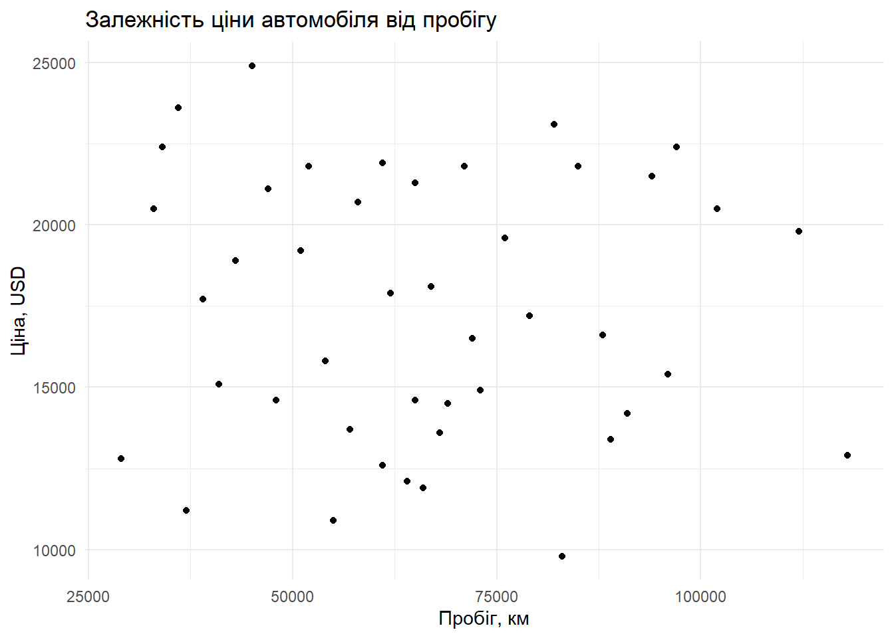

library(dplyr)
library(ggplot2)
library(readr)
library(tidyr)
library(knitr)Лабораторна робота № 1. Організація відтворюваного Data Science-проєкту. Отримання та первинна підготовка даних
Мета: Ознайомитися з принципами організації відтворюваного Data Science-проєкту в середовищі RStudio. Навчитися отримувати та імпортувати табличні дані, виконувати їх первинний аудит, проводити базову підготовку даних засобами R та зберігати результати у структурованому проєкті.
Теоретичні відомості
Відтворюваний Data Science-проєкт
Відтворюваний проєкт передбачає, що результат аналізу можна отримати повторно шляхом виконання програмного коду без ручного редагування даних.
Основні принципи:
- вихідні дані зберігаються окремо та не змінюються;
- усі операції підготовки виконуються програмним кодом;
- використовуються відносні шляхи до файлів;
- результати аналізу формуються з
.qmd-документа; - структура проєкту є зрозумілою та повторюваною;
- Git використовується для контролю версій.
CRISP-DM
CRISP-DM – методологія виконання Data Science-проєктів, яка містить такі етапи:
- розуміння бізнес-задачі;
- розуміння даних;
- підготовка даних;
- моделювання;
- оцінювання;
- впровадження.
У цій лабораторній роботі основна увага приділяється розумінню та первинній підготовці даних.
Quarto
Quarto дозволяє поєднувати текстовий опис, програмний код R, таблиці та графіки в одному документі. Після виконання .qmd-файлу формується готовий HTML-звіт.
Структура проєкту
Проєкт лабораторної роботи має таку структуру:
LR1/
├── lab1_IAD.qmd
├── README.md
├── .gitignore
├── data/
│ ├── raw/
│ │ └── car_sales.csv
│ └── processed/
└── figures/Каталог data/raw/ містить початкові дані. Каталог data/processed/ використовується для збереження результату після підготовки даних. Каталог figures/ призначений для графічних результатів.
Підключення бібліотек
Для роботи використовуються бібліотеки dplyr, ggplot2, readr, tidyr та knitr.
Отримання та імпорт даних
У лабораторній роботі використовується навчальний табличний набір даних про продаж автомобілів.
Набір містить інформацію про марку, модель, рік випуску, пробіг, об’єм двигуна, тип палива, тип коробки передач та ціну автомобіля.
Початковий файл збережено у каталозі data/raw/.
raw_path <- "data/raw/car_sales.csv"
if (!file.exists(raw_path)) {
stop("Файл data/raw/car_sales.csv не знайдено.")
}
cars_raw <- read_csv(raw_path, show_col_types = FALSE)
head(cars_raw)# A tibble: 6 × 9
car_id brand model year mileage_km engine_l fuel transmission price_usd
<dbl> <chr> <chr> <dbl> <dbl> <dbl> <chr> <chr> <dbl>
1 1 Toyota Coro… 2018 72000 1.6 Petr… Automatic 16500
2 2 Volkswagen Golf 2017 91000 1.4 Petr… Manual 14200
3 3 Ford Focus 2019 54000 1.5 Dies… Manual 15800
4 4 Skoda Octa… 2020 43000 1.6 Dies… Automatic 18900
5 5 Renault Mega… 2018 68000 1.5 Dies… Manual 13600
6 6 Toyota Camry 2017 85000 2.5 Petr… Automatic 21800Первинний аудит даних
Розмірність набору даних
Спочатку визначимо кількість рядків та стовпців.
dim(cars_raw)[1] 60 9Отриманий набір даних містить 60 спостережень та 9 змінних.
Типи змінних
Перевіримо структуру таблиці.
glimpse(cars_raw)Rows: 60
Columns: 9
$ car_id <dbl> 1, 2, 3, 4, 5, 6, 7, 8, 9, 10, 11, 12, 13, 14, 15, 16, 17…
$ brand <chr> "Toyota", "Volkswagen", "Ford", "Skoda", "Renault", "Toyo…
$ model <chr> "Corolla", "Golf", "Focus", "Octavia", "Megane", "Camry",…
$ year <dbl> 2018, 2017, 2019, 2020, 2018, 2017, 2019, 2020, 2018, 201…
$ mileage_km <dbl> 72000, 91000, 54000, 43000, 68000, 85000, 51000, 39000, 7…
$ engine_l <dbl> 1.6, 1.4, 1.5, 1.6, 1.5, 2.5, 1.5, 2.0, 1.6, 2.0, 1.6, 2.…
$ fuel <chr> "Petrol", "Petrol", "Diesel", "Diesel", "Diesel", "Petrol…
$ transmission <chr> "Automatic", "Manual", "Manual", "Automatic", "Manual", "…
$ price_usd <dbl> 16500, 14200, 15800, 18900, 13600, 21800, 19200, 17700, 1…У наборі присутні числові та текстові змінні.
Числовими є:
car_id;year;mileage_km;engine_l;price_usd.
Категоріальними є:
brand;model;fuel;transmission.
Перевірка пропущених значень
Для кожної змінної визначимо кількість пропущених значень.
missing_values <- cars_raw |>
summarise(across(everything(), ~ sum(is.na(.)))) |>
pivot_longer(
cols = everything(),
names_to = "variable",
values_to = "missing_count"
)
missing_values# A tibble: 9 × 2
variable missing_count
<chr> <int>
1 car_id 0
2 brand 0
3 model 0
4 year 0
5 mileage_km 1
6 engine_l 1
7 fuel 0
8 transmission 0
9 price_usd 0Для зручності перегляду:
kable(
missing_values,
col.names = c("Змінна", "Кількість пропусків")
)| Змінна | Кількість пропусків |
|---|---|
| car_id | 0 |
| brand | 0 |
| model | 0 |
| year | 0 |
| mileage_km | 1 |
| engine_l | 1 |
| fuel | 0 |
| transmission | 0 |
| price_usd | 0 |
У наборі даних присутні пропущені значення у змінних mileage_km та engine_l.
Перевірка дублікатів
Перевіримо наявність повністю однакових рядків.
sum(duplicated(cars_raw))[1] 0Також перевіримо повторення ідентифікаторів автомобілів.
sum(duplicated(cars_raw$car_id))[1] 0Повторення ідентифікатора може свідчити про дублювання запису, тому під час підготовки даних такі записи потрібно обробити.
Опис числових змінних
Виконаємо базовий статистичний опис числових змінних.
summary(
cars_raw |>
select(year, mileage_km, engine_l, price_usd)
) year mileage_km engine_l price_usd
Min. :2016 Min. : 29000 Min. :1.000 Min. : 9800
1st Qu.:2018 1st Qu.: 51500 1st Qu.:1.500 1st Qu.:14425
Median :2018 Median : 65000 Median :1.600 Median :17900
Mean :2018 Mean : 66932 Mean :1.666 Mean :17757
3rd Qu.:2019 3rd Qu.: 82500 3rd Qu.:2.000 3rd Qu.:21300
Max. :2020 Max. :118000 Max. :2.500 Max. :24900
NAs :1 NAs :1 За допомогою summary() можна отримати мінімальне та максимальне значення, медіану, середнє значення та квартилі для числових змінних.
Опис категоріальних змінних
Перевіримо кількість автомобілів кожної марки.
cars_raw |>
count(brand, sort = TRUE)# A tibble: 11 × 2
brand n
<chr> <int>
1 Toyota 10
2 Ford 7
3 Skoda 7
4 Renault 6
5 Volkswagen 6
6 Hyundai 5
7 Kia 5
8 BMW 4
9 Honda 4
10 Audi 3
11 Mercedes 3Розподіл за типом палива:
cars_raw |>
count(fuel, sort = TRUE)# A tibble: 2 × 2
fuel n
<chr> <int>
1 Petrol 39
2 Diesel 21Розподіл за типом коробки передач:
cars_raw |>
count(transmission, sort = TRUE)# A tibble: 2 × 2
transmission n
<chr> <int>
1 Automatic 38
2 Manual 22Первинна підготовка даних
Підготовка виконується програмним кодом, а початковий файл data/raw/car_sales.csv залишається без змін.
Видалення дубльованих ідентифікаторів
Спочатку залишимо лише один запис для кожного автомобіля.
cars_clean <- cars_raw |>
distinct(car_id, .keep_all = TRUE)Ця операція потрібна для того, щоб кожен автомобіль мав у наборі лише один запис.
Обробка пропущених значень
Для числових змінних mileage_km та engine_l використаємо медіанне значення відповідної змінної.
cars_clean <- cars_clean |>
mutate(
mileage_km = ifelse(
is.na(mileage_km),
median(mileage_km, na.rm = TRUE),
mileage_km
),
engine_l = ifelse(
is.na(engine_l),
median(engine_l, na.rm = TRUE),
engine_l
)
)Медіана використовується для заповнення пропусків, оскільки вона менш чутлива до можливих крайніх значень, ніж середнє арифметичне.
Створення нової змінної
На основі року випуску створимо змінну car_age, яка характеризує вік автомобіля.
cars_clean <- cars_clean |>
mutate(
car_age = 2026 - year
)Це дозволяє отримати додаткову характеристику автомобіля без зміни початкових даних.
Перетворення категоріальних змінних
Категоріальні змінні перетворимо на фактори.
cars_clean <- cars_clean |>
mutate(
brand = factor(brand),
model = factor(model),
fuel = factor(fuel),
transmission = factor(transmission)
)Таке перетворення дозволяє R коректніше працювати з категоріальними даними під час подальшого аналізу.
Перевірка результату підготовки
Після виконання операцій повторно перевіримо пропущені значення.
cars_clean |>
summarise(across(everything(), ~ sum(is.na(.))))# A tibble: 1 × 10
car_id brand model year mileage_km engine_l fuel transmission price_usd
<int> <int> <int> <int> <int> <int> <int> <int> <int>
1 0 0 0 0 0 0 0 0 0
# ℹ 1 more variable: car_age <int>Перевіримо структуру підготовленого набору.
glimpse(cars_clean)Rows: 60
Columns: 10
$ car_id <dbl> 1, 2, 3, 4, 5, 6, 7, 8, 9, 10, 11, 12, 13, 14, 15, 16, 17…
$ brand <fct> Toyota, Volkswagen, Ford, Skoda, Renault, Toyota, Honda, …
$ model <fct> Corolla, Golf, Focus, Octavia, Megane, Camry, Civic, Elan…
$ year <dbl> 2018, 2017, 2019, 2020, 2018, 2017, 2019, 2020, 2018, 201…
$ mileage_km <dbl> 72000, 91000, 54000, 43000, 68000, 85000, 51000, 39000, 7…
$ engine_l <dbl> 1.6, 1.4, 1.5, 1.6, 1.5, 2.5, 1.5, 2.0, 1.6, 2.0, 1.6, 2.…
$ fuel <fct> Petrol, Petrol, Diesel, Diesel, Diesel, Petrol, Petrol, P…
$ transmission <fct> Automatic, Manual, Manual, Automatic, Manual, Automatic, …
$ price_usd <dbl> 16500, 14200, 15800, 18900, 13600, 21800, 19200, 17700, 1…
$ car_age <dbl> 8, 9, 7, 6, 8, 9, 7, 6, 8, 10, 9, 8, 7, 10, 9, 7, 6, 8, 7…Кількість рядків після підготовки:
nrow(cars_clean)[1] 60Збереження оброблених даних
Створимо каталог для оброблених даних, якщо він ще не існує.
dir.create(
"data/processed",
recursive = TRUE,
showWarnings = FALSE
)Збережемо підготовлений набір у форматі CSV.
processed_path <- "data/processed/car_sales_clean.csv"
write_csv(
cars_clean,
processed_path
)Таким чином, початковий файл зберігається у data/raw/, а результат обробки – у data/processed/.
Контрольна візуалізація
Побудуємо діаграму залежності ціни автомобіля від його пробігу.
ggplot(
cars_clean,
aes(x = mileage_km, y = price_usd)
) +
geom_point() +
labs(
title = "Залежність ціни автомобіля від пробігу",
x = "Пробіг, км",
y = "Ціна, USD"
) +
theme_minimal()
На графіку кожна точка відповідає окремому автомобілю. Візуалізація дозволяє первинно оцінити взаємозв’язок між пробігом та ціною автомобілів.
Перевірка відтворюваності
Усі операції імпорту, аудиту, підготовки, збереження та візуалізації виконуються програмним кодом.
Для перевірки середовища виконання можна використати:
sessionInfo()R version 4.6.1 (2026-06-24 ucrt)
Platform: x86_64-w64-mingw32/x64
Running under: Windows 11 x64 (build 26200)
Matrix products: default
LAPACK version 3.12.1
locale:
[1] LC_COLLATE=Russian_Russia.utf8 LC_CTYPE=Russian_Russia.utf8
[3] LC_MONETARY=Russian_Russia.utf8 LC_NUMERIC=C
[5] LC_TIME=Russian_Russia.utf8
time zone: Europe/Kiev
tzcode source: internal
attached base packages:
[1] stats graphics grDevices utils datasets methods base
other attached packages:
[1] knitr_1.52 tidyr_1.3.2 readr_2.2.0 ggplot2_4.0.3 dplyr_1.2.1
loaded via a namespace (and not attached):
[1] bit_4.6.0 gtable_0.3.6 jsonlite_2.0.0 compiler_4.6.1
[5] crayon_1.5.3 tidyselect_1.2.1 parallel_4.6.1 scales_1.4.0
[9] yaml_2.3.12 fastmap_1.2.0 R6_2.6.1 labeling_0.4.3
[13] generics_0.1.4 tibble_3.3.1 pillar_1.11.1 RColorBrewer_1.1-3
[17] tzdb_0.5.0 rlang_1.3.0 utf8_1.2.6 xfun_0.60
[21] S7_0.2.2 bit64_4.8.6 cli_3.6.6 withr_3.0.3
[25] magrittr_2.0.5 digest_0.6.39 grid_4.6.1 vroom_1.7.1
[29] hms_1.1.4 lifecycle_1.0.5 vctrs_0.7.3 evaluate_1.0.5
[33] glue_1.8.1 farver_2.1.2 rmarkdown_2.32 purrr_1.2.2
[37] tools_4.6.1 pkgconfig_2.0.3 htmltools_0.5.9 Таким чином, для повторного отримання результату достатньо мати початковий файл data/raw/car_sales.csv та виконати .qmd-документ.
Висновки
У ході лабораторної роботи було організовано відтворюваний Data Science-проєкт у середовищі RStudio та Quarto.
Було виконано імпорт табличних даних про автомобілі, проведено первинний аудит набору даних, перевірено його розмірність, типи змінних, пропущені значення та дублікати.
Під час підготовки даних було видалено дубльовані ідентифікатори, оброблено пропущені значення, створено нову змінну віку автомобіля та виконано перетворення категоріальних змінних у фактори.
Підготовлений набір даних було збережено у каталозі data/processed/. Також було побудовано контрольну візуалізацію залежності ціни автомобіля від пробігу.
Організована структура проєкту та використання Quarto забезпечують можливість повторного виконання всіх етапів аналізу без ручного редагування даних.